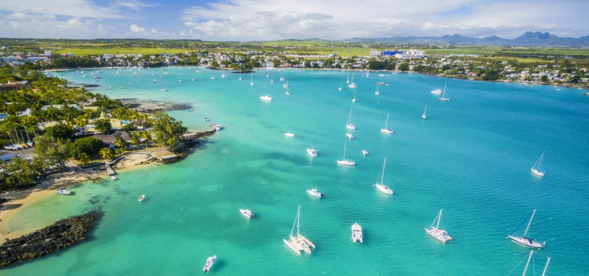
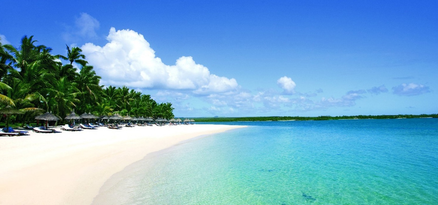
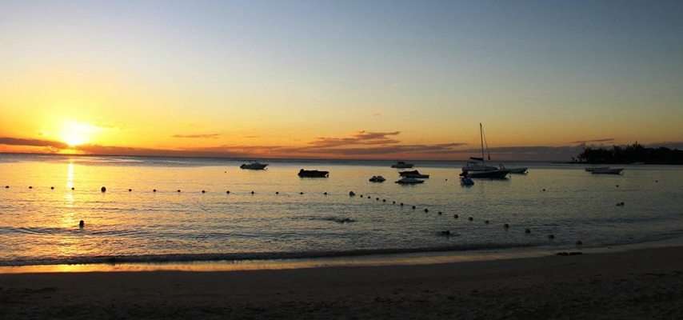
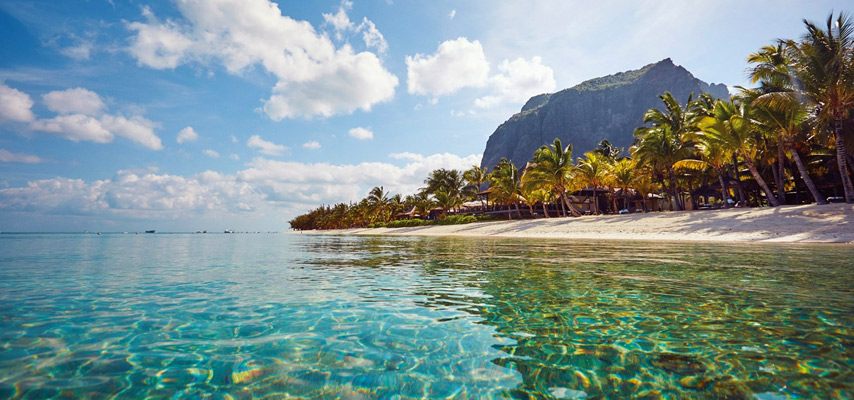

La Cuvette Beach
The public beach of La Cuvette is very close to the center of Grand Bay. The beach is situated near the Royal Palm hotel and you can reach it when heading from Grand Bay to Pereybere. The beach is quite small and intimate.
The water is very calm and the beach is clear of rocks and corals. It is very nice to walk from the beach along the coast until reaching the center of Grand Bay.
Location: Grand Bay, Mauritius
Mont Choisy Beach
Mont Choisy is ideal for those who are seeking a peaceful and intimate getaway.This part of the island offers you its splendid beach which stretches almost 3 kilometres from Trou aux Biches to Pointe aux Canonniers. It is among the longest beaches on the island and is frequently visited by locals and tourists.
Peaceful, 1.4km coastal strip with fine sand, shade trees, clear, calm waters & food vendors.
Location: Mont Choisy,Mauritius
Pereybere Beach
Pereybere is just a 5-minute drive away from Grand Bay or a 30-minute walk, where you will find the key highlight of the place to be the beach. Pereybere is very well known for its beautiful beach which is 150 metres long.
Backed by shady trees, this bustling beach features swimming, sunbathing, kayaking & picnicking.
Location: Pereybere , Mauritius
Le Morne Beach
The Le Morne peninsula is situated on the south west tip of Mauritius. The beaches of Le Morne are located on the west part of the Le Morne peninsula, at the foot of the Le Morne Brabant
The public beach of Le Morne is a beautiful beach with white coral sand, very clear waters providing great visibility, trees scattered along the beach, and beautiful scenery with the Le Morne Mountain as an impressive background.
Location : Le Morne,Mauritius
Gris Gris Beach

The Gris Gris beach is located in the South of Mauritius, a few kilometers southeast of the village of Souillac. When driving on the coastal road, heading east from Souillac, you will see a sign leading to the beach of Gris Gris.
Gris Gris beach offers the visitors a magnificent view from the top of its cliffs. This part of the island is not surrounded by coral reefs which causes the large waves to crash directly on the cliffs creating big splashes of water.
Location : Gris Gris,Souillac ,Mauritius